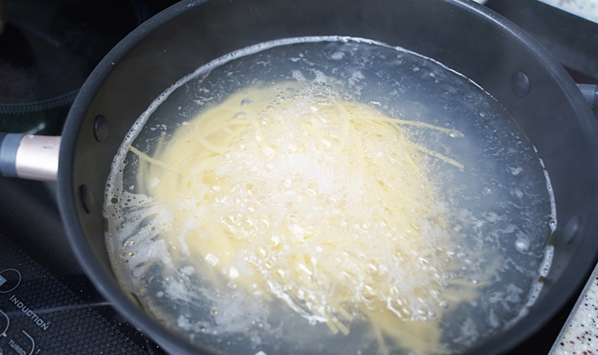
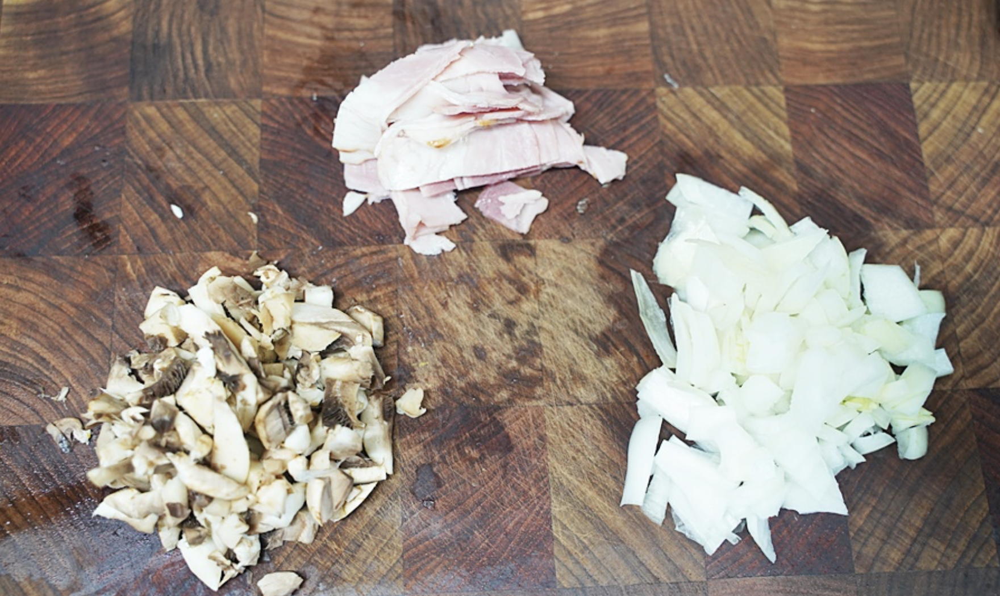
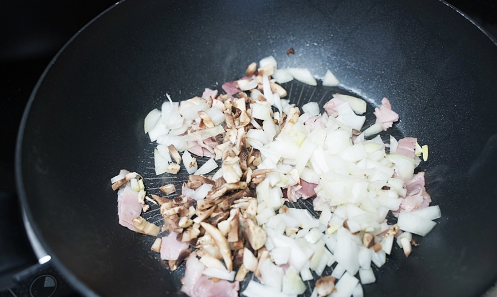
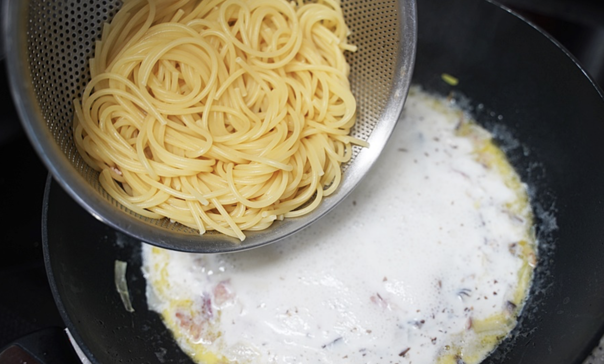
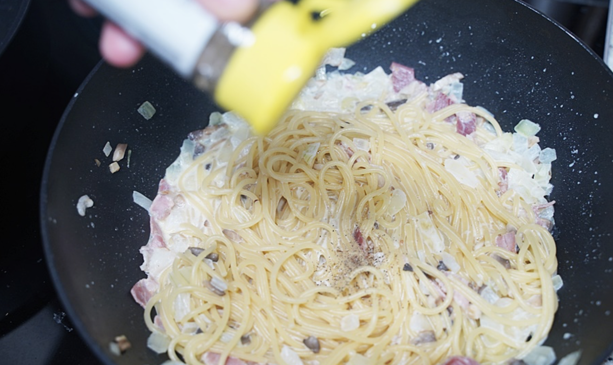

요리법
1)요리재료
재료 : 물 1.5리터, 스파게티 면 90g, 소금 1스푼, 올리브유 약간, 베이컨 2줄, 양파 반 개, 양송이버섯 1개 반, 밀가루 1/2스푼, 우유 200ml, 버터 1스푼, 올리 브유 2스푼, 파마산 치즈 2스푼, 소금 1/6스푼, 후추, 파슬리가루
2)기본정보
조리시간 : 20분 내외
분량 : 2인분 기준
칼로리 : 124kcal
3)요리과정

01. 물 1.5L에 소금 1스푼을 넣고 물을 끓인다. 물이 끓어 오르면 면을 넣고 6분 정도 삶아준다.(면수는 버리지 않는다.)

02. 재료들을 잘게 썰어준다.

03. 넓은 팬에 베이컨을 넣고 볶다가 베이컨이 노릇노릇해지면 양파와 양송이 버섯을 넣고 볶아준다. 양파가 어느 정도 볶아지면 올리브유 2스푼과 버터 1조각을 넣고 볶는다.

04. 어느정도 볶아지면 우유 200ml를 넣고 소금을 1꼬집 넣는다. 그리고 면을 넣고 밀가루 1/2스푼을 넣고 소스와 함께 끓여준다.

05. 파마산 치즈 가루를 2스푼 넣고 걸쭉해질 때까지 끓여준다.(면수로 국물량을 조절해도 된다.) 완성되면 후추를 2번정도 뿌려준다.